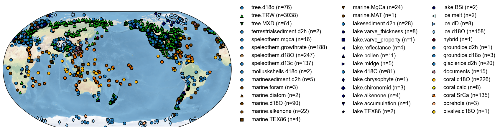
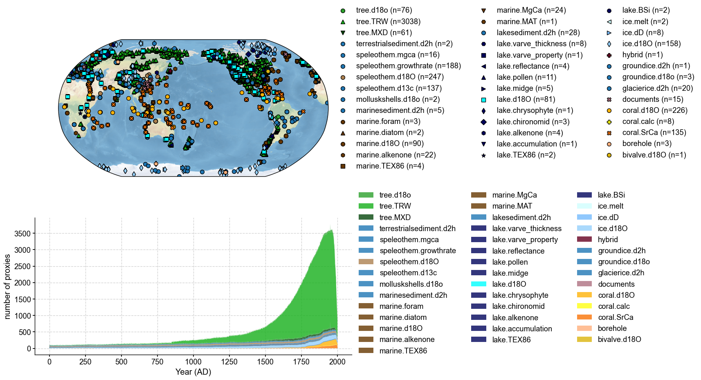
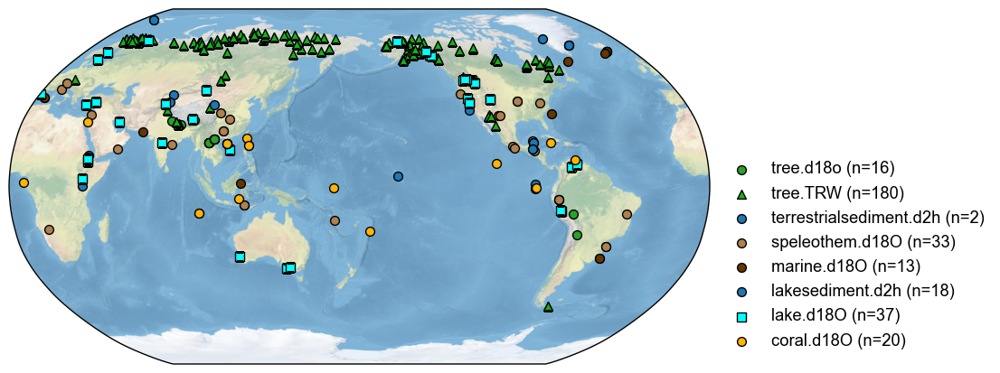

Visualize and filter DoD2k with cfr#
[ ]:
%load_ext autoreload
%autoreload 2
import cfr
import pandas as pd
Load the DoD2k database#
[2]:
df = pd.read_pickle('./data/dod2k_MNE_24-11-23_dup_free.pkl')
df.columns
[2]:
Index(['archiveType', 'climateInterpretation_variable', 'dataSetName',
'geo_meanElev', 'geo_meanLat', 'geo_meanLon', 'geo_siteName',
'originalDataURL', 'originalDatabase', 'paleoData_notes',
'paleoData_proxy', 'paleoData_sensorSpecies', 'paleoData_units',
'paleoData_values', 'year', 'yearUnits', 'datasetId',
'DuplicateDetails'],
dtype='object')
Create a cfr.ProxyDatabase()#
[10]:
pdb = cfr.ProxyDatabase().from_df(
df, pid_column='datasetId',
lat_column='geo_meanLat',
lon_column='geo_meanLon',
elev_column='geo_meanElev',
time_column='year',
value_column='paleoData_values',
proxy_type_column='paleoData_proxy',
archive_type_column='archiveType',
climate_column='climateInterpretation_variable',
)
Visualize DoD2k on a map#
Note that any unkonwn proxy types (not predefined types in cfr) will be colored in blue and marked with circles by default:
[4]:
fig, ax = pdb.plot()

We may set color and marker styles for the unknowns via updating cfr.visual.STYLE.colors_dict and cfr.visual.STYLE.markers_dict. For example:
[5]:
cfr.visual.STYLE.colors_dict.update({
'tree.d18o': 'tab:green',
'lake.d18O': 'cyan',
})
cfr.visual.STYLE.markers_dict.update({
'tree.d18o': 'o',
'lake.d18O': 's',
})
fig, ax = pdb.plot()

Visualize DoD2k on a map with the counting of the records of each proxy type#
[6]:
%%time
fig, ax = pdb.plot(plot_count=True)
CPU times: user 45.4 s, sys: 27 s, total: 1min 12s
Wall time: 1min 12s

Filter the DoD2k database#
We have the below climate interpretation strings:
[8]:
set(df['climateInterpretation_variable'])
[8]:
{'?18O.precipitation',
'AMO',
'Aridity',
'Asian summer monsoon',
'E/P',
'E:P (groundwater \\fluid balance\\")"',
'East African Monsoon strength',
'Effective Moisture',
'Estuary salinity',
'Evaporation',
'FE23_northamerica_usa_mt112: nan, FE23_northamerica_usa_mt113: nan',
'I_E',
'M',
'Mean Annual Precipitation',
'Moisture flux from the subtropical North Pacific (driven by SST anomalies in the Kuroshio Extension region)',
'Monsoon strength',
'NAO index',
'NULL',
'P',
'P/E',
'PDO',
'PDSI',
'P_E',
'P_amount',
'P_amount and temperature',
'P_amount, P_E',
'P_amount, RH',
'P_amount, RH, T_air, P_E',
'P_amount, T_air',
'P_isotope',
'Precipitation amount',
'Precipitation amount (as a function of temperature)',
'Precipitation source',
'Precipitation_amount, SAM',
'Precipitation_amount, Temperature_air',
'Precipitation_amount, humidity',
'S',
'Solar insolation',
'Source and intensity',
'Storm track, Pacific SST',
'T',
'TM',
'T_air',
'T_air, P_amount',
'T_air, P_amount, drought index SPEI',
'T_air, RH, P_amount',
'T_water',
'Temperature and Precipitation amount',
'Temperature_air',
'West African monsoon intensity',
'air temperature',
'amount effect',
'aridity',
'atmospheric circluation',
'atmospheric circulation',
'changes in monsoon intensity.',
'd18O',
'd18O precipitation',
'd18O_seawater',
'discharge',
'effective moisture/evaporation',
'evaporation / precipitation',
'evaporation/ groundwater inflow',
'evaporation/precipitation',
'hydrology, west wind intensity',
'lake level; net precipitation',
'lake overflow',
'moisture (P-E)',
'moisture balance (P-E)',
'n/a',
'nan',
'not clear',
'not interpreted to reflect climate (note by Iso2k compiler: dD precip does not change seasonally in this part of Greenland, likely because source areas are proximal and carry relatively enriched moisture to this region throughout the year)',
'pages2k_Asia_011: T, pages2k_Asia_012: T',
'pages2k_Asia_015: T, pages2k_Asia_017: T',
'precipitation amount',
'precipitation d18O',
'precipitation seasonality',
'rainfall seasonality',
'rainfall source area',
'regional hydrology and river runoff',
'regional rainfall amount',
'source region',
'strength',
'strength of Indian ocean moisture transport',
'surface pressure',
'temperature and salinity',
'temperature/d18Osw',
'temperature/salinity',
'the position between the ecotone of desiduous forests and prairy',
'water availability',
'~T~M'}
Now let’s add tags for hydroclimate records. Below is a nonexhaustive example:
[11]:
for pid, pobj in pdb.records.items():
# as an example below
conds = [
'moisture' in pobj.climate.lower(),
'precip' in pobj.climate.lower(),
'water' in pobj.climate.lower(),
'lake' in pobj.climate.lower(),
pobj.climate in ['~T~M', 'PDSI', 'P_E', 'P'],
]
if any(conds):
pdb[pid].tags.add('hydro')
With the tag information, we can filter the database and visualize only the hydroclimate records in the database:
[ ]:
fig, ax = pdb.filter(by='tag', keys=['hydro']).plot()

[14]: